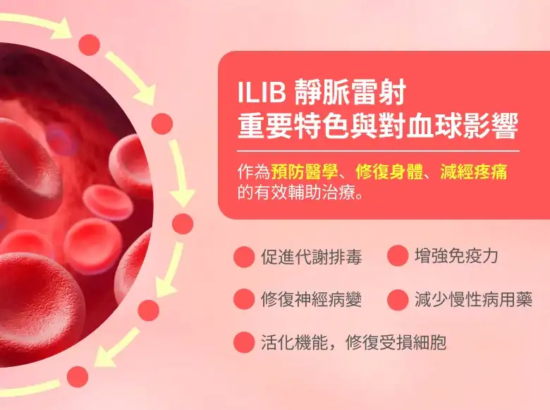

ILIB靜脈雷射


 甚麼是ILIB 靜脈雷射?
甚麼是ILIB 靜脈雷射?
ILIB 靜脈雷射為低能量靜脈雷射治療（Intravenous Laser Irradiation of Blood，ILIB），是利用光纖導管將光波波長632.8nm 的低能量雷射紅光，導入人體靜脈血管，讓血液做日光浴SPA，進行細胞能量的轉換。
對血球細胞粒腺體進行光化學作用，其中的血球和抗體會吸收雷射光的能量而變有活性，可促進血液循環、新陳代謝、活化與修復細胞等，長期使用對慢性病的治療有強大的輔助效果，能改善及預防缺氧性與心血管疾病，甚至可減少慢性病的長期用藥。
ILIB 雷射光療法主要改善腦血管疾病，如中風麻痺、肌肉萎縮，以及心血管疾病，如高血壓、心臟病、血管硬化等等，亦可以幫助高血脂與糖尿病患之體力恢復。如今施打ILIB靜脈雷射前後，也可以搭配不同功效的營養針，不僅可以改善上述症狀，也成為預防醫學、延緩老化、淨化血液功能、提供免疫力的醫學新療法。
ILIB靜脈雷射重要特色與對血球影響

靜脈雷射對血液的血球影響
紅血球 - 增加血紅素攜氧率、提升血液循環、改善微循環
白血球 - 維持標準白血球數量、調節免疫、增強抵抗力
血小板 - 改善血液濃度、稠度與血流
ILIB靜脈雷射療程方式
ILIB靜脈雷射有副作用嗎?
低能量雷射是一種生物刺激性（biostimulation）雷射，照射後人體會增強自我修復能力，與醫療開刀或燒灼用的生物破壞性(biodestruction)雷射不同，因此不會有副作用。